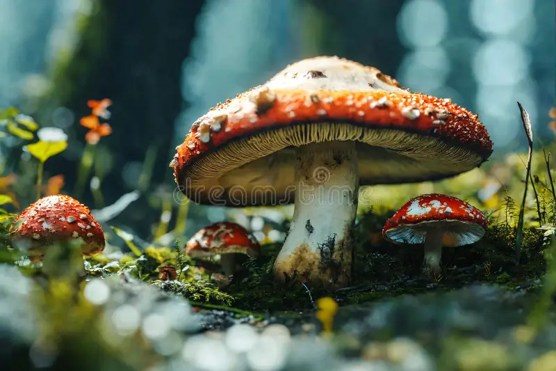
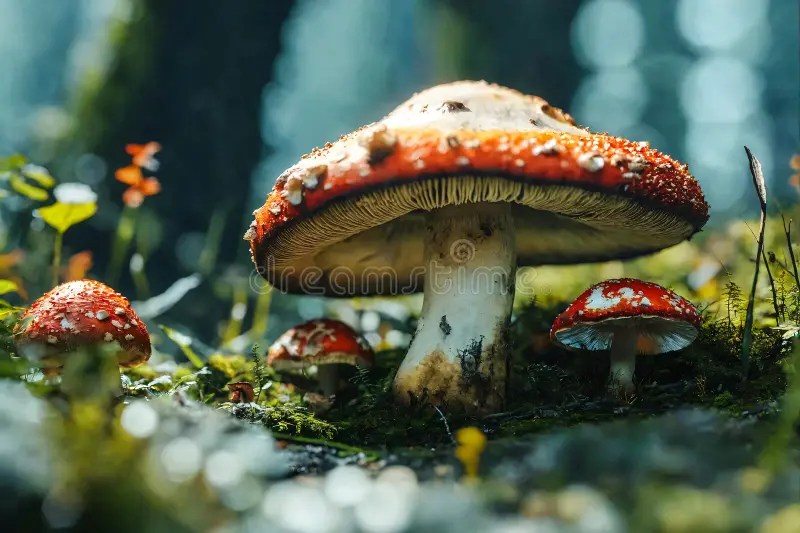
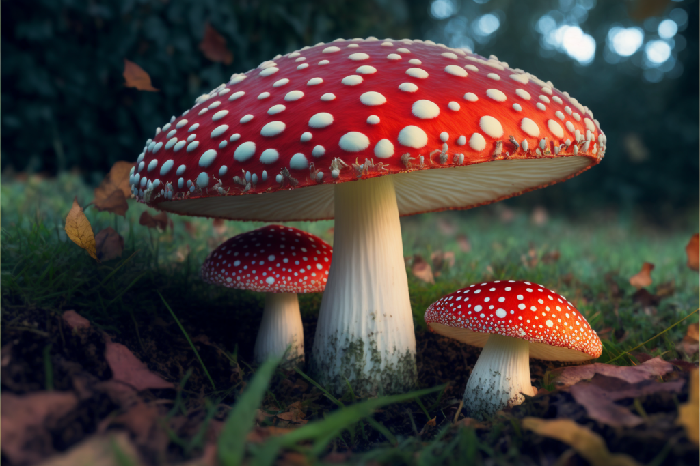
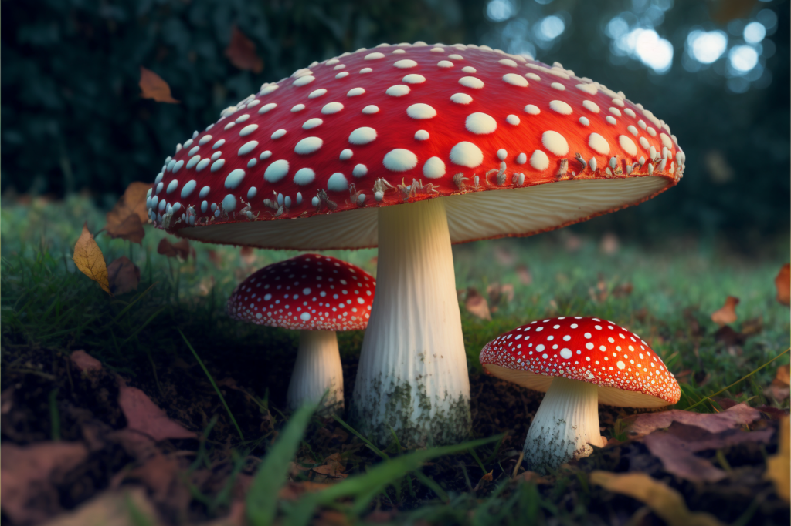

Introduction
The Fly Agaric mushroom (Amanita muscaria) is one of the most recognizable fungi in the world. Known for its bright red cap covered in white spots, it’s a striking symbol of the forest and often appears in fairy tales, fantasy artwork, and folklore. Its appearance sparks a sense of magic and danger — a reminder that not everything beautiful is safe to touch. Though visually enchanting, the Fly Agaric contains toxins that can cause nausea and hallucinations if consumed, making it one of nature’s most deceptive beauties. What fascinates me most about this mushroom is how it seems to live between reality and myth. For centuries, people have connected it with spiritual journeys, legends, and even holiday traditions. In some cultures, it’s said to represent transformation and connection to nature’s mysteries. Its vivid red and white colors are thought to have inspired the look of Santa Claus, and it’s also a famous symbol in games and stories like Super Mario Bros.. Whether it’s growing under birch trees in real life or glowing in digital worlds, the Fly Agaric continues to capture our imagination, blending science, history, and magic all in one bright little mushroom.
Biology and Habitat
Fly Agaric mushrooms thrive in temperate forests, growing in harmony with birch, pine, and spruce trees. This symbiotic relationship allows both organisms to exchange nutrients, enriching the soil and promoting forest health. They are usually found in late summer through fall, dotting the forest floor like bright red jewels among fallen leaves. Historically, the name “Fly Agaric” came from its use as an insecticide — small pieces were placed in milk to attract and kill flies.
Symbolism and Culture
From ancient rituals to modern pop culture, the Fly Agaric has fascinated humans for centuries. In Siberian shamanic traditions, it was believed to connect the physical and spiritual realms. Some historians even link it to the origins of Santa Claus — red and white colors, reindeer, and mystical journeys through the sky. Today, it’s best known in media like Super Mario Bros., where the mushroom symbolizes power, transformation, and growth.
Gallery
 

 
